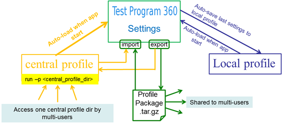

TP360 Profile
TP360 provides the possibility to create profiles in order to allow you to save the current application configuration which is very useful in case these need to be shared between different users.
There are two kinds of profiles provided:
There are three modules in TP360 that you can save their configurations in a profile:
Central profile
A directory which stores the configuration of the modules listed above. Users can access this directory to load the profile and initialize TP360.
Module profile
A tar.gz package which stores the configuration of a module, for example the Test Program Cleaner. Users can share this package and import it to load the TP360 modules profile.
The following figure shows the TP360 profiles:

Functional changes
- Introduced in SmarTest 7.3.3